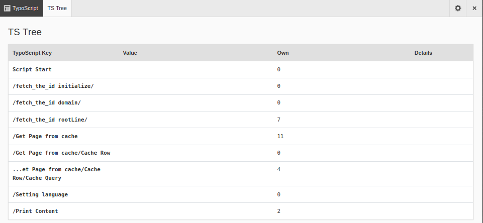
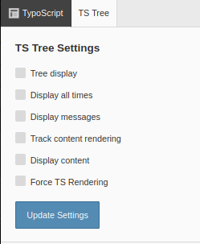

TypoScript¶
Click TypoScript on the admin panel bar to show the TypoScript (TS) Tree. The TypoScript Tree view shows information about the loaded TypoScript that is used for rendering the current page.

The TypoScript Tree of the Admin Panel
Click the cog icon at the top right of the admin panel bar to configure the settings.

The settings for the TypoScript Tree
- Tree display
- Displays TypoScript in a tree structure
- Display all times
- Adds rendering times to each area. This is helpful when debugging performance issues.
- Display messages
- Displays messages/details (if any). This can help to figure out what exactly is being rendered - but it does make the display quite big.
- Track content rendering
- Tracks each step in the content rendering process. This is most useful in combination with “Force TS Rendering”, because a page from cache may well be loaded without any content being individually rendered.
- Display content
- Displays the loaded content. This is especially helpful in the context of content rendering, because the content of each content element is displayed.
- Force TS Rendering
- Instead of loading the TypoScript from cache, this setting forces the full rendering of the TypoScript.